Day 3 — reference harness and measured noise floor
2026-11-27T18:29:25.329Z · M3E_API31 · API 31 · 1080×1920 @ 420dpi · 1 cold boots · 1 repeats of the trivial scene per app per boot.
Cross-stack exact zero across all scenes: not met
The trivial scene was not part of this run; see the per-scene table for the measured differences.
- Determinism: 20 renders (10 app/scene/boot combinations), maximum exact difference between any repeat and its first run: 0 px.
- Text anti-aliasing: trivial scene not included in this run.
- Shadows: shadow scene not included in this run.
Existing PLAYBOOK §7 AA-aware 0.05% gate on the core scenes: not evaluated (no core scenes in this run). Text layout markers were not captured.
Scene categories
| Category | Scenes | Σ exact px (scene max) | Σ AA-aware px (scene max) | Max AA-aware % | Max channel Δ | Max mean Δ (diff px) | Δ > 2 outside AA edges | Flat fills > 2 | Gate |
|---|---|---|---|---|---|---|---|---|---|
interaction | 5 | 389,856 | 0 | 0.0000% | 18 | 12.24 | 0 | 0 | tracked — no threshold |
Only the core category is the five-scene PLAYBOOK §7 gate. The text category contains the 30 typography roles (and, when included, the dense label/paragraph probes), tracked separately under U-25. Its numbers are a regression ceiling, not a pass/fail claim; ADR-010 is pending.
Noise split
Threshold semantics. The AA-aware count uses pixelmatch 7.1.0 with threshold: 0.1 and includeAA: false. Threshold 0.1 is a YIQ squared-colour-distance limit (35215 × 0.1²), not a per-channel delta; for a neutral grey difference it is roughly 26/255 per channel. Pixels below that limit are treated as matching even if their bytes differ. The raw columns beside it are threshold-independent: max channel Δ, mean channel Δ over differing pixels, count of pixels with Δ > 2 outside anti-aliased edges, and count of those that are flat fills. An anti-aliased edge is a pixel with any 8-neighbour differing by more than 8/255 in either image; a flat fill has a uniform 3×3 neighbourhood in both images.
| Scene | Category | Exact diff px | Exact % | AA-aware px | AA-aware % | Max channel Δ | Mean Δ (diff px) | Δ > 2 outside AA edges | Flat fills > 2 | Boots |
|---|---|---|---|---|---|---|---|---|---|---|
| interaction-states | interaction | 97,787 | 22.1739% | 0 | 0.0000% | 9 | 1.02 | 0 | 0 | 1 |
| state-layer-colors | interaction | 187,908 | 42.6095% | 0 | 0.0000% | 9 | 1.02 | 0 | 0 | 1 |
| focus-rings | interaction | 2,254 | 0.5111% | 0 | 0.0000% | 18 | 12.24 | 0 | 0 | 1 |
| elevation-levels | interaction | 22,350 | 5.0680% | 0 | 0.0000% | 1 | 1.00 | 0 | 0 | 1 |
| ripple-frames | interaction | 79,557 | 18.0401% | 0 | 0.0000% | 11 | 1.02 | 0 | 0 | 1 |
Exact counts are raw byte inequality. AA-aware counts are pixelmatch's non-anti-aliased differences at threshold 0.1; the threshold-independent columns are defined above. A zero AA-aware count therefore means "no pixel exceeded pixelmatch's perceptual threshold outside its AA heuristic", not "the crops are byte-identical".
Shadow measurement
| App | Non-background px outside rect | Max Δ from background | Min Δ from background |
|---|
The shadow scene was not included in this run.
Layout edges
| Scene | Compose content bbox | React Native content bbox | Max edge delta (px) |
|---|---|---|---|
| interaction-states | 42,100 756×325 | 42,100 756×325 | 0 |
| state-layer-colors | 53,42 735×442 | 53,42 735×442 | 0 |
| focus-rings | 42,179 756×168 | 42,179 756×168 | 0 |
| elevation-levels | 34,107 792×349 | 34,107 792×349 | 0 |
| ripple-frames | 53,179 735×168 | 53,179 735×168 | 0 |
Strict bounding box of pixels that are not exactly the scene background. It includes anti-aliased glyph edges and the shadow. No tolerance is added; the number is recorded as measured.
Non-AA text pixels (boot 1, trivial)
None.
Determinism
| Boot | App | Scene | Runs | Max exact diff | Max AA-aware diff | Status |
|---|---|---|---|---|---|---|
| 0 | compose | interaction-states | 2 | 0 | 0 | zero |
| 0 | compose | state-layer-colors | 2 | 0 | 0 | zero |
| 0 | compose | focus-rings | 2 | 0 | 0 | zero |
| 0 | compose | elevation-levels | 2 | 0 | 0 | zero |
| 0 | compose | ripple-frames | 2 | 0 | 0 | zero |
| 0 | rn | interaction-states | 2 | 0 | 0 | zero |
| 0 | rn | state-layer-colors | 2 | 0 | 0 | zero |
| 0 | rn | focus-rings | 2 | 0 | 0 | zero |
| 0 | rn | elevation-levels | 2 | 0 | 0 | zero |
| 0 | rn | ripple-frames | 2 | 0 | 0 | zero |
Cross-boot repeatability (each boot run 0 vs boot 1 run 0)
| Boot | App | Scene | Exact diff px | AA-aware px | Max channel Δ |
|---|---|---|---|---|---|
| Single-boot run. | |||||
Emulator profile (verified)
| Check | Observed | Status |
|---|---|---|
| avd | M3E_API31 | match |
| api | 31 | match |
| locale | en-US | match |
| fontScale | 1.0 | match |
| animatorDurationScale | 0 | match |
| transitionAnimationScale | 0 | match |
| windowAnimationScale | 0 | match |
| userRotation | 0 | match |
| immersiveConfirmation | confirmed | match |
| nightMode | Night mode: no | match |
| wmSize | Physical size: 1080x1920 | match |
| wmDensity | Physical density: 420 | match |
| gpu | GLES: Google (Google Inc. (Google)), Android Emulator OpenGL ES Translator (ANGLE (Google, Vulkan 1.3.0 (SwiftShader Device (Subzero) (0x0000C0DE)), SwiftShader driver-5.0.0)), OpenGL ES 3.1 (OpenGL ES 3.1.0 (ANGLE 2.1.2 git hash: 1f0534893540)) | match |
Font file: 9b523f7d82593df0107173849ebb8c817471a1df4b4fb2c3cbf40cfd810c8281 in both APKs and in the source tree. Runtime probes: Compose ; React Native .
Frozen device, GPU, settings, and cold-boot procedure: FROZEN_PROFILE.md. Raw run log: run.log.
Scene captures
interaction-states
97,787 exact diff px (22.1739%), 0 AA-aware diff px (0.0000%), max channel delta 9, mean channel delta over differing pixels 1.02, delta > 2 outside anti-aliased edges 0, flat fills > 2 0.
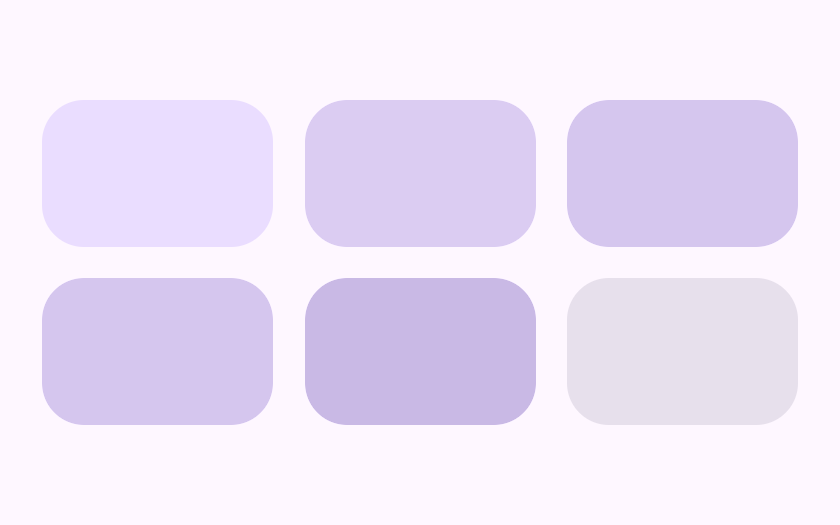
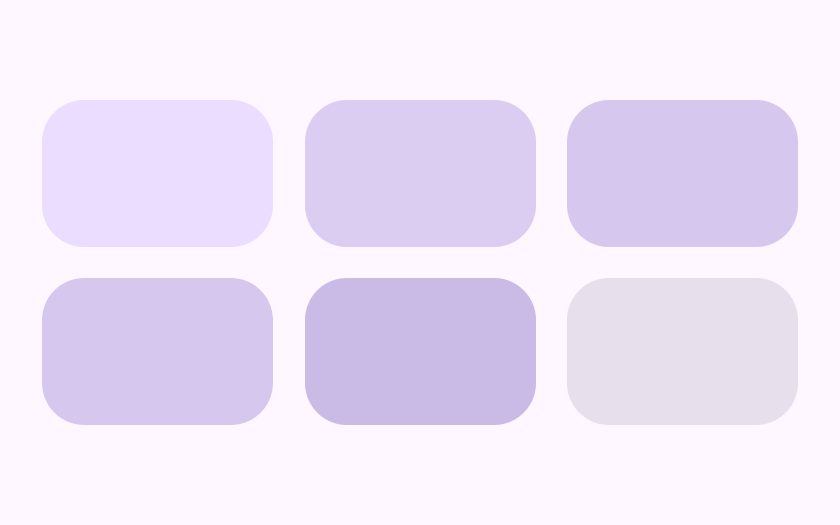
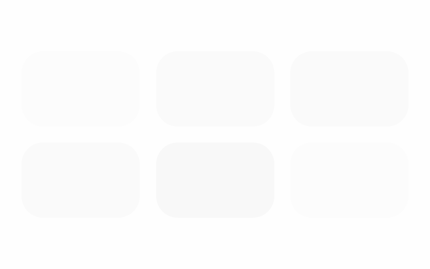
state-layer-colors
187,908 exact diff px (42.6095%), 0 AA-aware diff px (0.0000%), max channel delta 9, mean channel delta over differing pixels 1.02, delta > 2 outside anti-aliased edges 0, flat fills > 2 0.
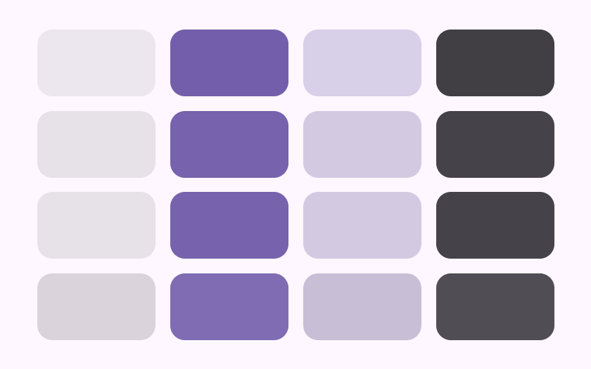
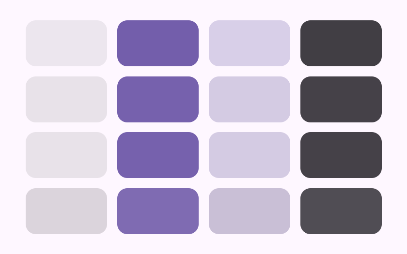
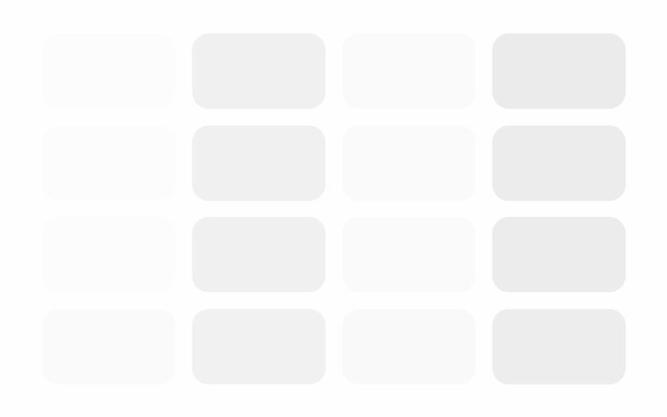
focus-rings
2,254 exact diff px (0.5111%), 0 AA-aware diff px (0.0000%), max channel delta 18, mean channel delta over differing pixels 12.24, delta > 2 outside anti-aliased edges 0, flat fills > 2 0.
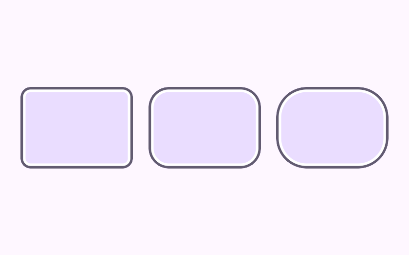
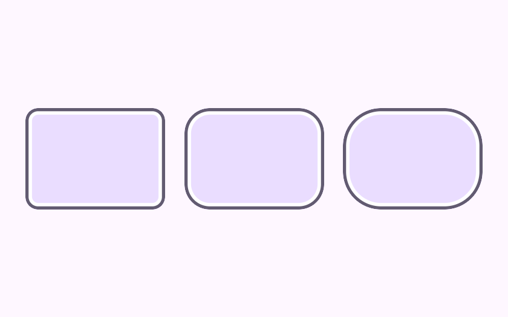
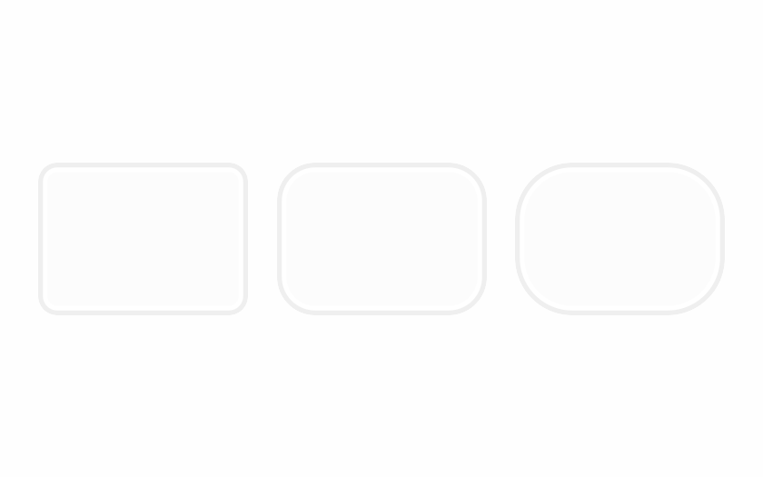
elevation-levels
22,350 exact diff px (5.0680%), 0 AA-aware diff px (0.0000%), max channel delta 1, mean channel delta over differing pixels 1.00, delta > 2 outside anti-aliased edges 0, flat fills > 2 0.
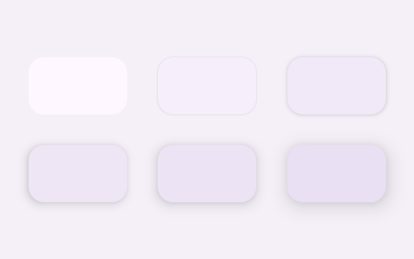
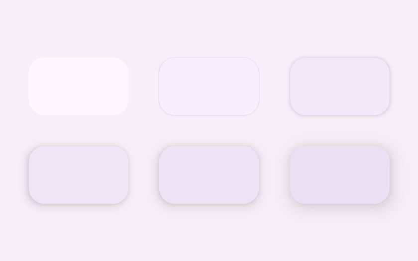
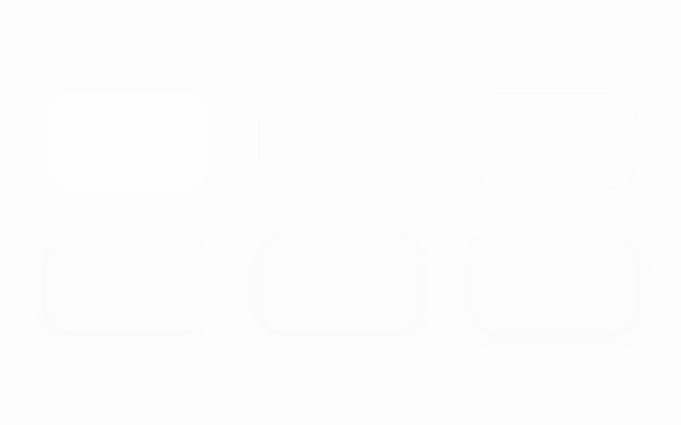
ripple-frames
79,557 exact diff px (18.0401%), 0 AA-aware diff px (0.0000%), max channel delta 11, mean channel delta over differing pixels 1.02, delta > 2 outside anti-aliased edges 0, flat fills > 2 0.
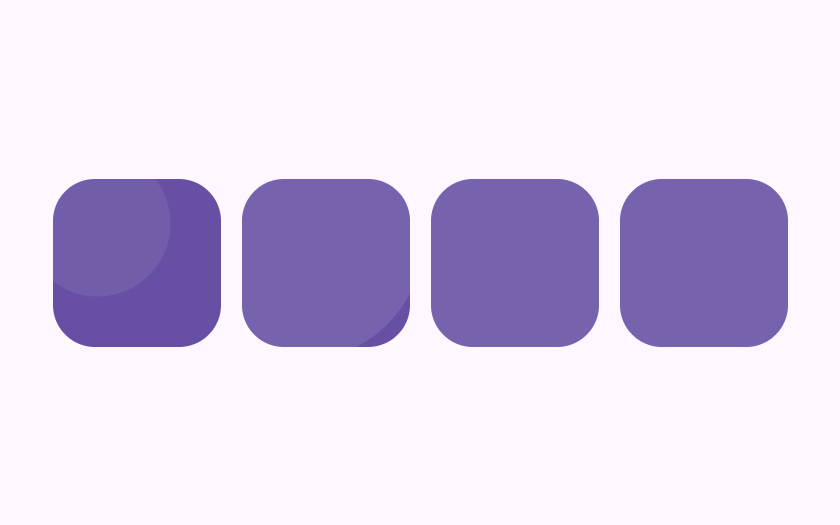
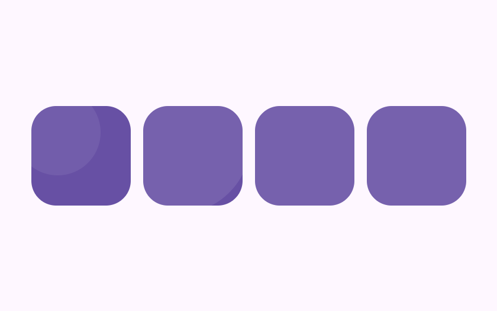
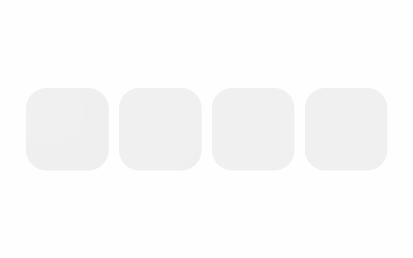
What this establishes
- The capture, crop, compare, and report pipeline is deterministic across repeated launches and cold boots.
- Compose and React Native agree within the reported per-scene deltas on this profile; exact-zero scenes are listed above.
- The text scenes in this run are measured in the per-scene table; glyph-edge deltas are reported separately from flat fills.
- No threshold is proposed or changed here. This run is a measurement; any gate change needs an ADR.
What this does not establish
- It does not establish component parity beyond the scenes listed.
- It does not establish iOS behavior.
- It does not establish that the remaining edge deltas are acceptable. That is a product decision.